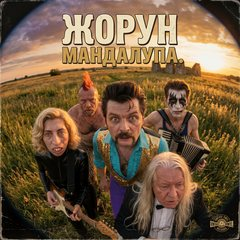

Спой на страпонском
Пой поверх клипа или снимай себя, а в конце забирай готовый ролик для VK Клипов.

«Мандалупа»Песня из клипа, 1:49
Ты открыл страницу внутри приложения. Если камера не включится, открой её в Safari или Chrome: нажми ⋯ вверху и выбери «Открыть в браузере».
Ролик собирается прямо в телефоне и никуда не отправляется.
Перед записью
Микрофон
0:00
Начать запись
Собираю ролик…